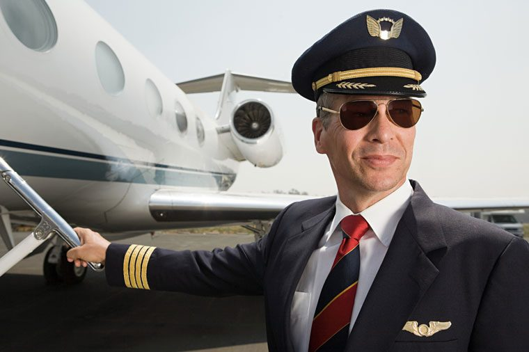
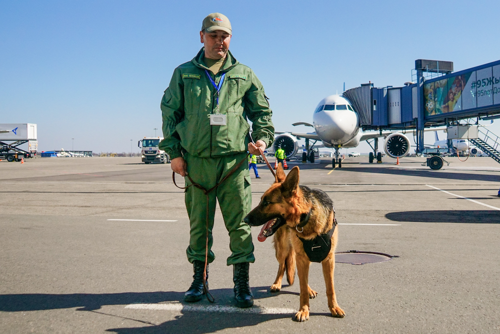
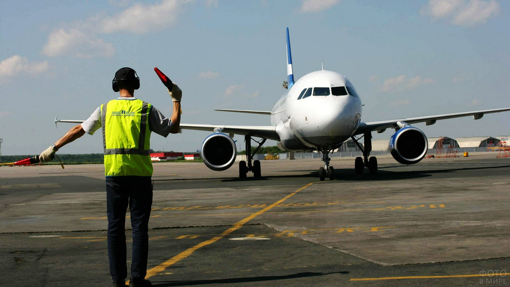

Вы можете включить/выключить темную тему на сайте:
АВИА портал
Работа мечты в Авиации
Вакансии для тех, кто любит небо и самолеты
Профессии, связанные с небом, всегда были окружены ореолом романтики.
Мы решили собрать все вакансии «небесных» профессий — то есть связанных с авиацией.
Это не только специалисты, которые находятся на борту самолета во время полета,
но и те, кто обеспечивает безопасность авиаперевозок, находясь на земле.
Последние опубликованные

Пилот
Это профессионал, управляющий самолетом и обеспечивающий доставку пассажиров
и грузов до места назначения в соответствии с расписанием. Командир воздушного
судна (КВС) и второй пилот обязаны проверить исправность всех приборов, уточнить
маршрут, метеорологическую и орнитологическую обстановку. В экстренных ситуациях
им необходимо принимать верные решения в состоянии стресса и недостатка времени,
чтобы спасти жизни пассажиров. Это сложная, но престижная работа, за которую хорошо платят.
Бортпроводник
Обеспечивает комфорт и безопасность пассажиров во время полета.
Он досконально знает правила авиаперевозки пассажиров, багажа и
грузов, эксплуатации аварийно-спасательного и бортового оборудования.
В работу бортпроводника также входит организация питания.
Авиадиспетчер
Работает в специально оборудованном помещении аэропорта.
Он на мониторе отслеживает место пребывания самолетов,
вошедших в зону его ответственности, поддерживает связь с экипажем,
дает ему необходимую информацию и советы в трудной ситуации.
Эта работа очень тяжелая и ответственная, даже небольшая ошибка грозит катастрофой.
Профессия авиаконструктора входит в число самых ответственных.
Авиационный техник
Может специализироваться на электронике, двигателях, гидравлике или системах
кондиционирования. Работники этой профессии одинаково востребованы в гражданской
авиации и на службе в вооруженных силах страны. С ростом квалификации и
опытом работы авиатехникам присваиваются категории - чем она выше, тем
более сложные и ответственные работы разрешено выполнять.
Авиаконструктор
Это специалист по проектированию и конструированию механических конструкций,
систем и агрегатов летательных аппаратов (ЛА). В его обязанности входит детальная
конструктивная проработка подсистем ЛА (механических конструкций, систем и агрегатов),
выпуск конструкторской документации для серийного производства.
Летчик-испытатель
Очень редкая профессия. Сюда попадают только самые опытные,
но и им еще приходится доучиваться! Обязанности этого пилота —
тестировать новую технику и помогать авиаконструкторам ее дорабатывать.
Вторая зона ответственности — обучение экипажа военного воздушного судна.
Бортинженер
Cледит за состоянием всех систем и механизмов самолета
(шасси, электроника, топливная система, датчики).
На сегодняшний день в гражданской авиации все меньше моделей самолетов,
в которых требуется бортинженер, так как выполняемые им функции автоматизируются.
Однако это не означает, что профессия не востребована.

Сотрудник службы авиационной безопасности
Это работник службы авиационной безопасности, осуществляющий предполетный
досмотр пассажиров, ручной клади, багажа, грузов, почты, бортовых запасов,
членов экипажей, а также авиаперсонала при входе в контролируемую зону аэропорта.

Агент наземного обслуживания
Обеспечивает заправку воздушного судна(ВС) топливом,
буксировку ВС от/к месту стоянки, установку/уборку колодок, конусов,
открытие/закрытие грузовых люков ВС и руководит подъездом/отъездом спецтехники к/от ВС
Военный летчик
Это специалист широкого профиля.
Ведь для него не достаточно, подобно гражданскому пилоту,
просто вести самолет по заданной воздушной трассе — ему нужно
уметь маневрировать в небе, для чего необходимо выполнять фигуры
высшего пилотажа, держать строй, если бой ведет авиационное звено,
а также принимать мгновенные решения на основании оценки боевой ситуации.
В случае необходимости летчик должен уметь катапультироваться, воспользовавшись парашютом.